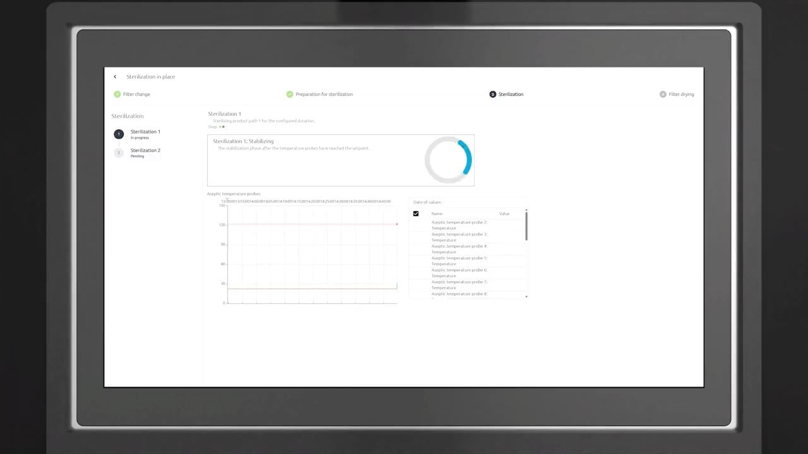

Industrial automation · Software stack · Rommelag
Full software stack upgrade
The operator interface is the part of the upgraded stack a batch runs on.
- On the Blow-Fill-Seal line I upgraded the software the operator runs. The part shown here is the human-machine interface, built in Python, Vue.js, and Docker.
- It walks a batch through sterilization and the other critical steps, and it keeps the process parameters on the same screen.
- The screen sits on a domain model shared with the mechatronic team, so the software and the machine describe one process.
Sterilization in progress on the bottelpack HMI: the step, the probes, and the setpoint on one screen.